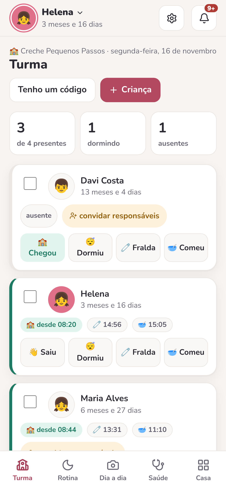

🪺 Ninho
Quem cuida junto,
cuida melhor.
A rotina do bebê compartilhada por toda a família, no celular de cada um.
🤰 → 🧒 Da gestação aos 5 anos

👆 Registro em 1 toque
🌙 Ciclo do sono
👨👩👧 Família conectada
🏫 Creche conectada
💊 Remédio seguro
📸 Fotos só da família
📄 Relatório ao pediatra
📶 Funciona sem internet
Experimente grátisFunciona no celular, sem baixar da loja
→
Para famílias, creches e escolas · Ninho · powered by Kaivo